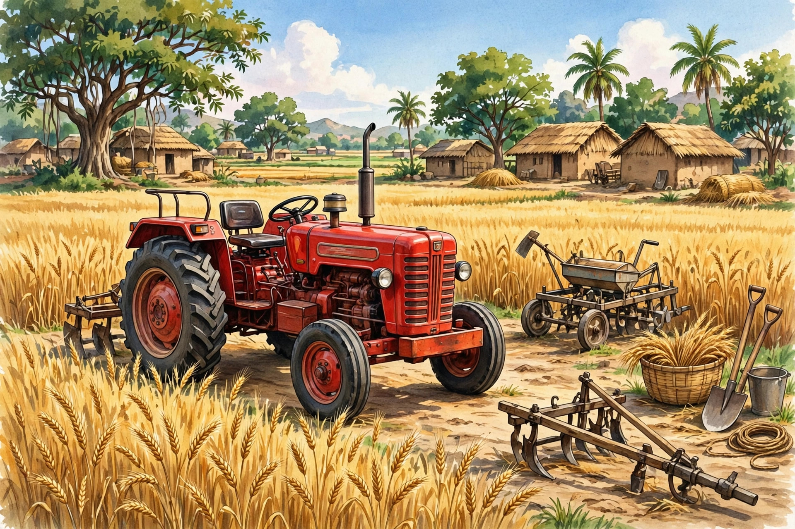

ফার্ম যন্ত্রপাতি ভর্তুকি ২০২৬-২৭: ৪ নভেম্বর ডেডলাইন!

চাষিদের জন্য বড় সুযোগ! পশ্চিমবঙ্গ সরকার ২০২৬-২৭ অর্থবছরে কৃষি যন্ত্রপাতিতে ভর্তুকি দিচ্ছে — মোট বরাদ্দ ₹৪০৭ কোটি, উপকৃত হবেন প্রায় ৬৭,৫৮৫ জন চাষি। ট্রাক্টর, পাওয়ার টিলার, পাম্প সেট, স্প্রেয়ার — নানা যন্ত্রে ৫০% পর্যন্ত ছাড়!
🚜 কেন এই ভর্তুকি এত গুরুত্বপূর্ণ?
চাষের খরচ দিন দিন বাড়ছে — শ্রমিকের মজুরি, ডিজেলের দাম, আর সময়মতো কাজ না হলে ফলনের ক্ষতি। একটা ট্রাক্টর বা পাওয়ার টিলার থাকলে কম সময়ে বেশি জমি চাষ করা যায়, আর সোলার পাম্প থাকলে সেচের খরচ প্রায় শূন্যে নেমে আসে। কিন্তু এই যন্ত্রগুলোর দাম এত বেশি যে সাধারণ চাষির পক্ষে একা কেনা কঠিন। সেই কারণেই সরকার অর্ধেক দাম (বা তার বেশি) দিয়ে দিচ্ছে — যাতে ছোট-বড় সব চাষি আধুনিক যন্ত্র ব্যবহার করে ফলন বাড়াতে পারেন।
⏰ ডেডলাইন মনে রাখুন: অনলাইন আবেদন ৬ অক্টোবর → ৪ নভেম্বর ২০২৬। তারপর প্রিন্ট কপি + কাগজপত্র ব্লকের ADA অফিসে জমা দিতে হবে ৬ নভেম্বরের মধ্যে। দেরি করলে আবেদন বাতিল!
💰 কোন যন্ত্রে কত ভর্তুকি?
- বড় যন্ত্রপাতি (ট্রাক্টর, পাওয়ার টিলার): ৫০% ভর্তুকি, সর্বোচ্চ ₹৩ লাখ
- ছোট যন্ত্রপাতি (স্প্রেয়ার, উইডার): ৫০% ভর্তুকি, সর্বোচ্চ ₹১০,০০০
- সোলার পাম্প সেট: ৬০% ভর্তুকি — সবচেয়ে বেশি ছাড়!
🧮 উদাহরণ দিয়ে বুঝুন:
- ₹৬ লাখের ট্রাক্টর → ৫০% = ₹৩ লাখ ছাড় (সর্বোচ্চ সীমার মধ্যে) → চাষি দেবেন মাত্র ₹৩ লাখ
- ₹৮ লাখের যন্ত্র → ৫০% = ₹৪ লাখ হলেও সর্বোচ্চ ₹৩ লাখই ছাড় পাবেন
- ₹১৮,০০০-এর স্প্রেয়ার → ৫০% = ₹৯,০০০ ছাড় (₹১০,০০০ সীমার মধ্যে)
- সোলার পাম্পে ৬০% ছাড় — তিনটি স্ল্যাবের মধ্যে এটাই সর্বোচ্চ সুবিধা!
👨🌾 কারা আবেদন করতে পারবেন?
- কৃষকবন্ধু (নতুন) বা PM-কিসান প্রকল্পের সুবিধাভোগী চাষি
- বয়স ১৮ থেকে ৭০ বছর
- সরকারি কর্মচারীরা আবেদন করতে পারবেন না
কেন এই শর্ত? কৃষকবন্ধু বা PM-কিসানের সুবিধাভোগী মানে সরকারের কাছে আপনার তথ্য ইতিমধ্যে যাচাই করা আছে — ফলে নতুন করে যাচাইয়ের ঝামেলা কম, প্রক্রিয়া দ্রুত হয়। আর সরকারি কর্মচারীদের বাদ দেওয়া হয়েছে কারণ এই ভর্তুকি প্রকৃত চাষিদের জন্য সংরক্ষিত।
📄 কী কী কাগজ লাগবে?
- ভোটার কার্ড
- আধার কার্ড
- DBT লিংক করা ব্যাংক পাসবই
- কৃষকবন্ধু / PM-কিসান রেজিস্ট্রেশন নম্বর
- জমির পর্চা
প্রতিটা কাগজেরই কারণ আছে: ভোটার কার্ড পরিচয় ও ঠিকানার প্রমাণ, আধার DBT-র জন্য বাধ্যতামূলক, DBT-লিংক পাসবই ছাড়া ভর্তুকির টাকা ব্যাংকে ঢুকবে না, রেজিস্ট্রেশন নম্বর দিয়ে যাচাই হবে আপনি সত্যিই সুবিধাভোগী কিনা, আর পর্চা প্রমাণ করবে জমিটা আপনার। একটা কাগজও মিসিং থাকলে আবেদন আটকে যেতে পারে — তাই আগেই সব গুছিয়ে রাখুন।
🖥️ আবেদন পদ্ধতি
- পোর্টালে গিয়ে অনলাইনে ফর্ম পূরণ করুন (৪ নভেম্বরের মধ্যে)
- ফর্মের প্রিন্ট বের করে প্রয়োজনীয় কাগজপত্রসহ ব্লকের ADA (সহকারী কৃষি অধিকর্তা) অফিসে জমা দিন (৬ নভেম্বরের মধ্যে)
মনে রাখবেন: শুধু অনলাইনে ফর্ম পূরণ করলেই হবে না — প্রিন্ট কপি ADA অফিসে জমা দেওয়া বাধ্যতামূলক। অনেকেই প্রথম ধাপ করে দ্বিতীয় ধাপ ভুলে যান, আর আবেদন বাতিল হয়ে যায়। দুটো তারিখই ডায়েরিতে লিখে রাখুন: ৪ নভেম্বর (অনলাইন) ও ৬ নভেম্বর (অফিসে জমা)।
🎰 নির্বাচন কীভাবে হবে?
আবেদনকারীদের মধ্যে থেকে সুবিধাভোগী বাছাই হবে ভিডিওগ্রাফি করা কম্পিউটারাইজড লটারির মাধ্যমে (DLSC)। অর্থাৎ স্বচ্ছ প্রক্রিয়া — কোনো সুপারিশে কাজ হবে না। কেন লটারি? বরাদ্দ সীমিত (৬৭,৫৮৫ জন), ফলে ন্যায্যভাবে বাছাইয়ের সবচেয়ে স্বচ্ছ উপায় এটাই। পুরো প্রক্রিয়ার ভিডিও রেকর্ডিং থাকে, তাই কেউ পক্ষপাতের অভিযোগ তুলতে পারবে না।
ℹ️ জানিয়ে রাখি: লটারির তারিখ এখনো ঘোষণা হয়নি। ঘোষণা হলেই আমরা আপডেট দেবো।
🔗 অফিসিয়াল লিংক
🌐 অফিসিয়াল পোর্টাল: wbfms.wb.gov.in — শুধুমাত্র এই সরকারি সাইট থেকেই আবেদন করুন। অন্য কোনো লিংকে টাকা দেবেন না।
💡 কাজের টিপস
- শেষ তারিখের অপেক্ষা করবেন না — শুরুতেই আবেদন করুন, শেষের দিকে সার্ভার জ্যাম হয়।
- ADA অফিসে যাওয়ার সময় সব কাগজের অরিজিনাল + ফটোকপি দুটোই নিয়ে যান।
- আবেদনের জন্য কোনো দালালকে টাকা দেবেন না — পুরো প্রক্রিয়া ফ্রি।
- আবেদনের অ্যাকনলেজমেন্ট/রসিদ যত্নে রাখুন — লটারির সময় কাজে লাগবে।
❓ সাধারণ প্রশ্ন
প্রশ্ন: আমি সরকারি চাকরি করি, কিন্তু চাষও করি — আবেদন করতে পারব?
উত্তর: না। সরকারি কর্মচারীরা এই ভর্তুকির জন্য যোগ্য নন — এটা শুধু প্রকৃত চাষিদের জন্য।
প্রশ্ন: লটারিতে নাম না এলে কী হবে?
উত্তর: এই অর্থবছরের বরাদ্দ শেষ হলে আর সুযোগ থাকবে না। পরের বছরের ঘোষণার জন্য অপেক্ষা করতে হবে।
প্রশ্ন: লটারির তারিখ কবে?
উত্তর: এখনো ঘোষণা হয়নি। ঘোষণা হলেই আমরা জানিয়ে দেবো।
প্রশ্ন: সোলার পাম্পে কেন সবচেয়ে বেশি ছাড়?
উত্তর: সোলার পাম্পে সরকার ৬০% ভর্তুকি দিচ্ছে — তিনটি স্ল্যাবের মধ্যে এটাই সর্বোচ্চ। সোলার পাম্পে ডিজেল বা বিদ্যুতের খরচ বাঁচে, তাই দীর্ঘমেয়াদে চাষির সবচেয়ে লাভ।
প্রশ্ন: শুধু অনলাইনে আবেদন করলেই কি হবে?
উত্তর: না। প্রথমে ৪ নভেম্বরের মধ্যে অনলাইনে ফর্ম পূরণ, তারপর প্রিন্ট কপি ৬ নভেম্বরের মধ্যে ADA অফিসে জমা — দুটো ধাপই বাধ্যতামূলক।
🌐 আরও নতুন নতুন তথ্যের জন্য আমাদের ওয়েবসাইট ভিজিট করুন: aicombo90.github.io/dafadar-online-seva — ওয়েবসাইটটা মোবাইলে সেভ/বুকমার্ক করে রাখুন যাতে হারিয়ে না যায়!
💬 সরকারি প্রকল্প ও চাকরির তাজা আপডেট সবার আগে পেতে আমাদের WhatsApp গ্রুপে যোগ দিন: WhatsApp গ্রুপে যোগ দিন
📺 ভিডিওতে দেখতে চান? আমাদের YouTube চ্যানেল সাবস্ক্রাইব করুন: @DafadarOnlineSeva